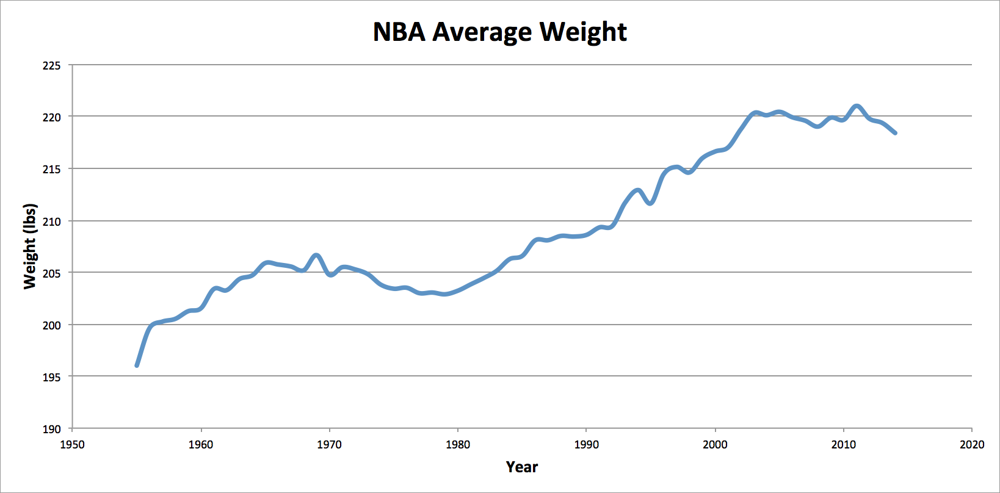
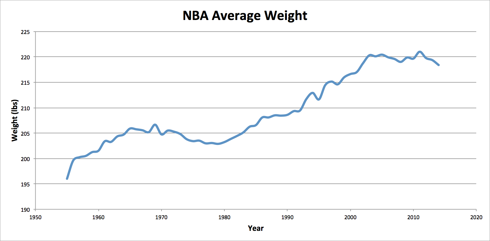

Welcome
Welcome to the NBA Height/Weight Dataset. This project began as a simply Python script to scrape Height and Weight of player from Basketball-Reference. Right now, height.py outputs in the format of a CSV file as follows:
$ python height.py > myData.csv
However, most users will simply want access to the datasets. They can download this dataset from the download bar at the top.
NBA Player Physique Trends
Here are some visualizations of the trends in NBA players' heights and weights
Average NBA Height & Weight (1955-2014)
Here are the height and weight trends over time independently.
 
Interestingly, the average height of a NBA player has plateaued, while weight continues to increase at a slow and gradual rate.

Interestingly, the average height of a NBA player has plateaued, while weight continues to increase at a slow and gradual rate.
Authors and Contributors
Project by Simon Warchol. Feel free to contact me at me (at) simonwarchol.com